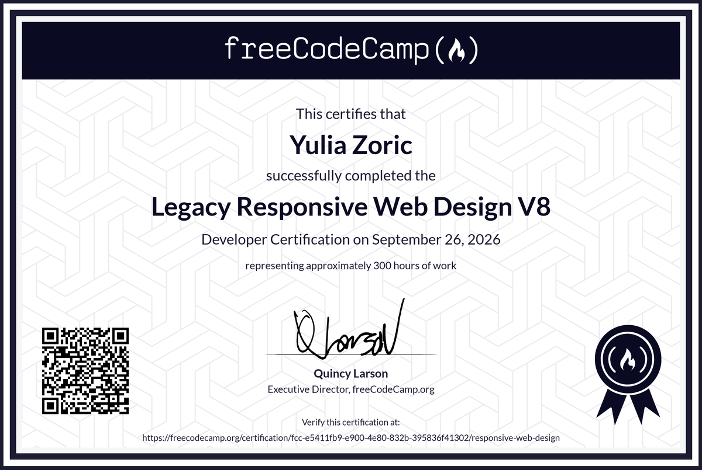

Yulia Zoric
Software developer — small systems that stay up.
Summary
I build small, boring systems that keep working: Python services under systemd, Telegram bots with real behaviour, and hand-written web front-ends that do not need a framework. Most of my work is unglamorous and that is the point — I care about the parts that fail quietly: the error nobody logs, the assumption nobody checked.
Skills
- Languages
- Python (standard library, no framework dependency), JavaScript, HTML, CSS, Bash
- Systems
- Linux (AlmaLinux, Debian), systemd units, nginx, SELinux, firewalld, SSH
- Containers
- Docker, Docker Compose, multi-container services with health checks
- LLM integration
- llama.cpp, OpenAI-compatible APIs, prompt design, tool calling, local inference on CPU
- APIs
- Telegram Bot API (long polling, reactions, chat actions), HTTP clients, rate-limit handling
- Practice
- Git, debugging by measurement, writing things down so the next person does not guess
Projects
Petrovich — a Telegram character bot
A grumpy engineer who lives in a group chat: answers when called, tells jokes, argues about drink, and swears at advertising posted by other bots. Runs with no third-party Python packages at all, and deploys in one command with Docker Compose.
Notable work: routing rules that keep a bot quiet in direct messages and responsive in groups; a two-stage spam filter (keyword heuristics, then a small local model) that only ever sees messages from other bots; a cloud brain with automatic fallback to a local model when the API fails.
A Telegram listener that does not lose messages
An architecture fix, not a feature. Several short-lived sessions were each polling the same bot token, which caused conflicts and lost messages. The solution: one permanent listener owns the token and writes every message to a queue on disk; sessions read the queue and mark what they have taken.
Result: conflicts became structurally impossible, messages survive a session restart, and the user can see when a message has been picked up.
A self-deploying restore kit
One script that rebuilds an environment on a fresh machine: detects the distribution and architecture, installs the toolchain, restores configuration and data, and prints exactly what remains for a human to do. Tested end to end in clean containers on Debian 12, Debian 13, AlmaLinux 9 and AlmaLinux 10.
The interesting part was the failures: an empty sudo variable breaking a piped installer, a native module needing build tools that a minimal image does not ship, and the curl-minimal package conflicting with curl on RHEL 9. None of them were visible by reading the script.
This site
No framework, no build step. Responsive layout, dark mode via prefers-color-scheme, and a print stylesheet so the résumé is readable on paper.
Certification
freeCodeCamp — Responsive Web Design (V8), earned 26 September 2026. Approximately 300 hours of coursework, five certification projects, each verified against freeCodeCamp's own test suite rather than my own checks.
- Survey Form — 44/44 of their tests passing
- Tribute Page — 19/19 passing, one of them additionally verified in a real browser because jsdom cannot measure layout
- Technical Documentation Page — 22/22 passing
- Product Landing Page — 25/25 passing
- Personal Portfolio Webpage — 12/12 passing
Verify it: freecodecamp.org/certification/…/responsive-web-design. The projects are also published at /learn/.

How I work
- Measure, do not assume. A claim about a system is worth nothing until something outside me confirms it. Several bugs in my own work were found only by running the thing.
- Write down what broke. Every mistake becomes a note, so the next attempt starts from evidence instead of optimism.
- Prefer the simple thing that works. A plain script that survives beats an elegant design that needs three layers.